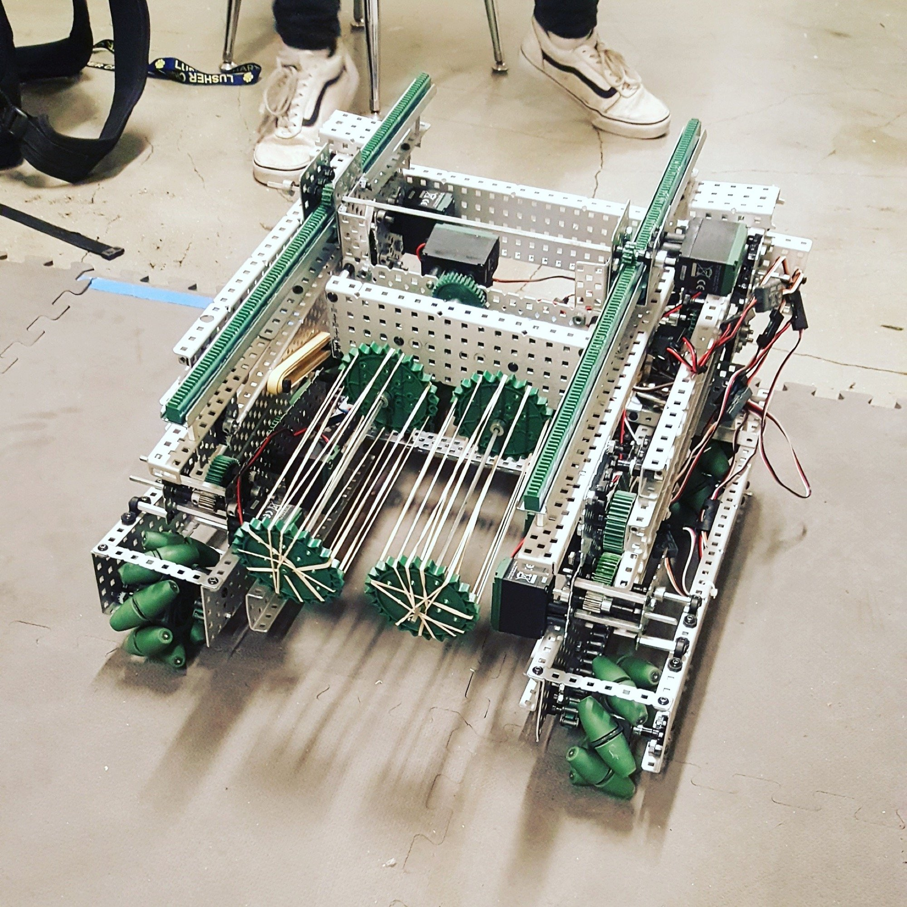
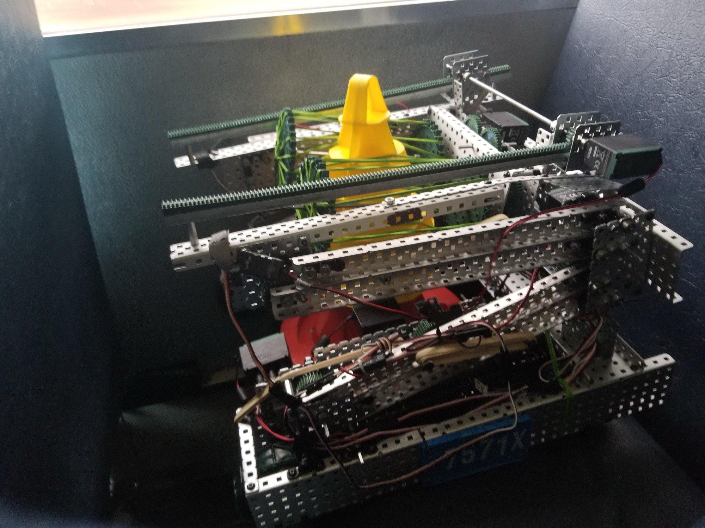
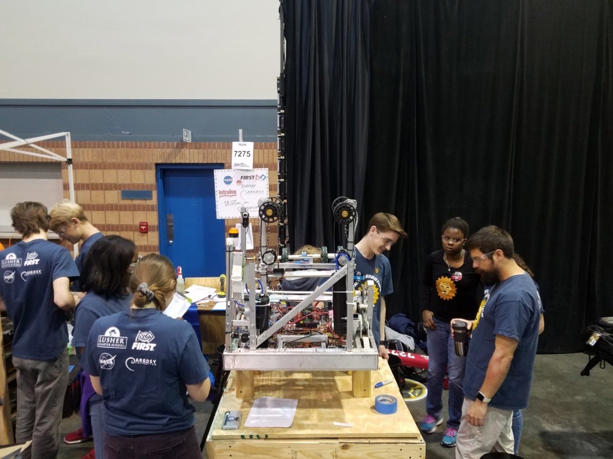

VEX Robotics — 8th Grade

VEX robot

VEX robot
Testing a four-bar linkage I designed and built to lift the mobile goal
FIRST Robotics — High School

Competition pit
High school FIRST team working on the robot during competition.